This season the studio has no walls. Through the summer Jeannie and I are working out of a vehicle across Wyoming, Montana, and Colorado — climbing and painting in the mornings, swimming the heat off at midday, documenting in the evenings, all of it running on a satellite signal and a battery.
Season XIII · Everything That Can Be Carried · opens at solstice
Two hundred small watercolours — half his, half hers — painted in the field and each one unique. The first iteration of a larger idea, made entirely on the move.
If you have four minutes: the long walk. If you have nine: the docent's route. If you came to find one specific object, you want the archive, and it is one click away and much better at that than this is.
Animals in breathing apparatus, machines grazing, mutual aid by airship. Twenty-eight works across ten years, arguing that what is coming is neither utopia nor collapse but a great deal of improvised equipment.
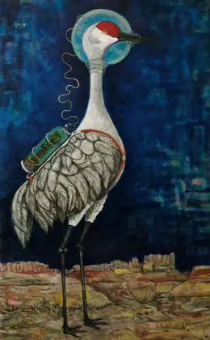
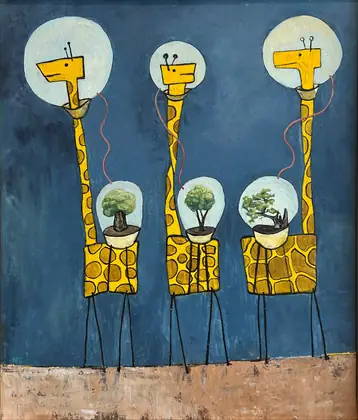
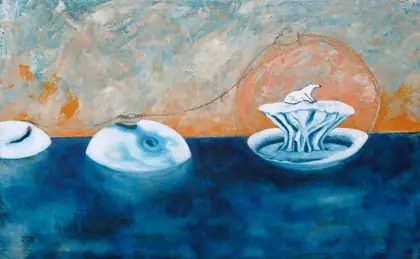
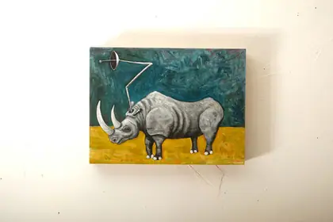
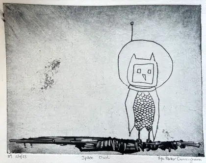
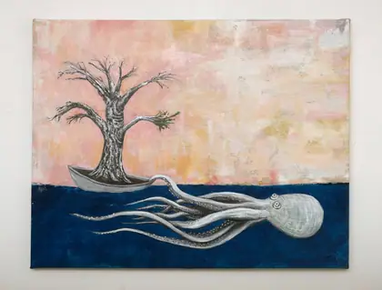
The newest sustained body of work. Lightning kept in a jar; water vapour solved as algebra; the sky with the landscape removed from underneath it.
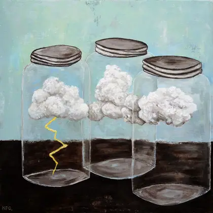
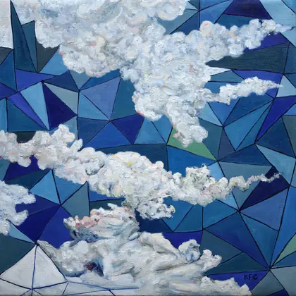
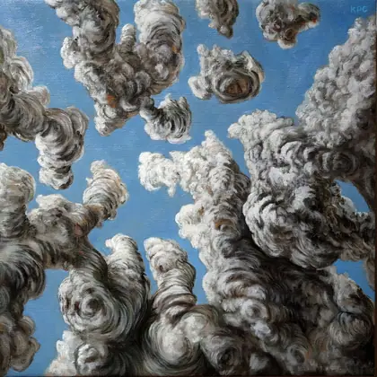
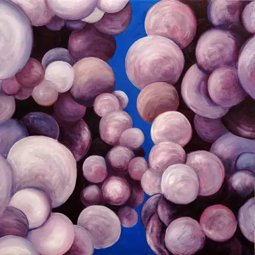
He walks to the same alligator junipers and draws them again. Each time the drawing gets slower.
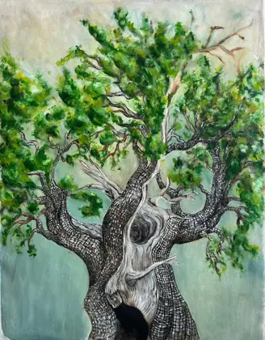
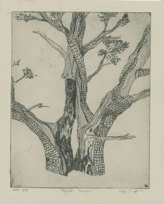
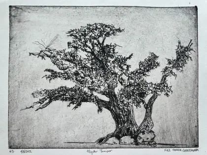
Two hand-bound first editions this season; The Periodic set on newsprint, four pages, one colour; twelve towns on the distribution list, none of them with a gallery.
Set in Bodoni Moda and IBM Plex Mono. Printed here as a broadsheet because a broadsheet folds: you get the front panel first and open the rest only if you want it. A website can do that and almost never does.
Truth or Consequences, New Mexico. Letters answered slowly and in order.